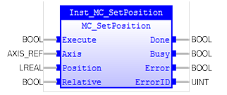
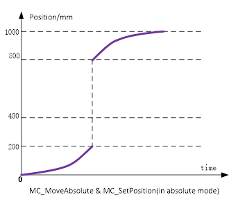
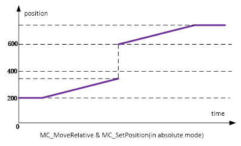
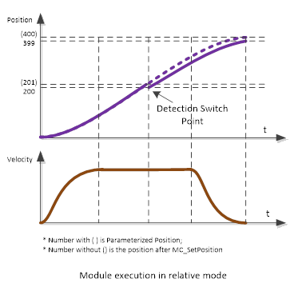

MC_SetPosition
Sets the specified axis with a position value.

Description:
MC_SetPosition shifts the coordinate system of an axis by
manipulating both the set-point position as well as the actual position of an
axis with the same value without any movement caused (Re-calibration with the
same following error). This can be used, for instance, for a reference
situation. This Function Block can also be used during motion without changing
the commanded position, which is now positioned in the shifted coordinate
system.
The input ’Relative’ is used to define whether the value of ‘Position’
is relative or absolute. If ‘Relative’ is TRUE, ‘Position’ will be regarded as
distance, which will be added to the actual position value of the axis at the
time of execution. This results in a recalibration by a specified distance. If ‘Relative’
is FALSE, the input ‘Position’ is regarded as an absolute position value. The
actual position value of the axis will be set to the value specified with the
‘Position’ value when ‘Done’ changes to TRUE.
Module
execution in absolute mode
•
Execution
while axis is stopped
The actual position starts changing when ‘Execute’ changes
to TRUE. ‘Busy’ (Executing) changes to TRUE when ‘Execute’ changes to TRUE.
‘Done’ changes to TRUE after the actual position is changed.
•
Execution
while axis is in motion
If you execute this instruction while positioning to an
absolute position, the target value will change according to the change in
position.
As an example, the axis operation is shown below for a
situation where the actual position is changed from 200 mm to 800 mm while the
axis has the target position at 400mm. The axis will complete the remaining
distance. The axis will move to 1000 mm with the MC_MoveAbsolute (Absolute
Positioning) instruction. Even if the actual position is changed, the
MC_MoveAbsolute (Absolute Positioning) instruction will move the axis for the
same distance that the motion is trigged. When the specified target position is
reached, ‘Done’ changes to TRUE.

As an example, if you execute this instruction while the
MC_MoveRelative (Relative Positioning) or MC_MoveVelocity (Velocity Control)
instruction is in execution, the actual position will change. However, if you
execute this instruction while the MC_MoveRelative (Relative Positioning) or
MC_MoveVelocity (Velocity Control) instruction is in execution, the positioning
operation is not affected.

If there is a buffered instruction, all instructions in the
buffer will execute as the two examples described above. Based on the example
above, if there is another MC_MoveAbsolute instruction (It will move to 1000)
in the buffer before MC_SetPosition excuting, after the previous MC_MoveAbsolute
finishing at position 1000, another MC_MoveAbsolute will move to 1200.
Module
execution in relative mode
Relative mode can be used to change the axis position during
the motion.
In relative mode, if the actual position has offset with the
parameterized position during the motion, we can use MC_SetPosition instruction
to compensate the offset.
As an example, the axis operation is shown below for a
situation where we install a detection switch at 200mm to detect the offset
between the actual position and the parameterized position. We make the axis
move from 0 mm to 400mm for a MC_MoveAbsolute instruction. When we get the signal
from detection switch and the actual position of axis reached 200mm, the
parameterized position that we get is 201mm, the offset is -1mm. We use
MC_SetPosition instruction to compensate the offset and the parameterized position
will change from 201mm to 200mm. The axis will move from 200mm to 399mm. The
positioning operation is not affected.

|
 Important:
Important:
|
|
It is NOT
recommended to use the MC_SetPosition instruction for Master (Master Axis)
that is in synchronized operation for instructions such as MC_GearIn (Start
Gear Operation).
If it is used
for a Master (Master Axis), the current position and the actual current
position of the Master are changed. As with the Slave axis, the command has
no effect. It will move as the plan when it’s connected to Master, but unpredictable
move might occur.
Therefore, to
use the MC_SetPosition instruction for the Master (Master Axis), disable the
relationship between the Master and Slave axes before executing the
instruction. Instructions, such as MC_GearOut (End Gear Operation), can be
used to do this.
In a nutshell,
use this instruction when the axis is in ‘Standstill’ or ‘Disabled’ state.
|
If there are buffered instructions, all instructions in the
buffer will execute as the example described above. MC_SetPosition does not
affect buffered instructions motion.
Make sure the input and output parameters are of data type
indicated in the table below.
‘Relative’ means that ‘Position’ is added to the actual position
value of the axis at the time of execution. This results in a recalibration by
a specified distance. ‘Absolute’ means that the actual position value of the
axis is set to the value specified in the ‘Position’ parameter.
Inputs/Outputs:
|
Name
|
Data Type
|
Description
|
|
INPUTS
|
|
Execute
|
BOOL
|
Write the value of the parameter at
rising edge
|
|
Axis
|
AXIS_REF
|
Reference to the axis
|
|
Position
|
LREAL
|
Position unit [u] (Means ‘Distance’
if ‘Relative’= TRUE)
|
|
Relative
|
BOOL
|
Relative distance if True,
‘Absolute’ position if False (= Default)
|
|
OUTPUTS
|
|
Done
|
BOOL
|
‘Position’
has been set a new value
|
|
Busy
|
BOOL
|
The
FB is not finished and new output values are to be expected
|
|
Error
|
BOOL
|
Signals
that an error has occurred within the FB
|
|
ErrorID
|
UINT
|
Error
identification
|
Examples:
Example 1:
|
 Example
Example
|
|
(*Example for
MC_SetPosition *)
inst_SetPosition ( Execute := bExe,
Axis
:= Axis0Ref,
Position
:= PosRef,
Relative
:= bRelative );
bDone := inst_SetPosition.Done;
bBusy := inst_SetPosition.Busy;
bError := inst_SetPosition.Error;
ErrorId := inst_SetPosition.Errorid;
|
See also: